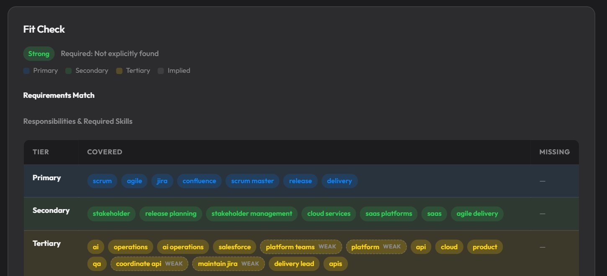

Job Synthesis
A local platform that turns one master profile and a job posting into an honest, tailored application: fit check, resume, cover letter and tracking. Claude, Codex and Antigravity all run the same workflow on it.
Who it’s forOne user so far: me. A test workspace of sample candidates stands in for demos.
The problem
- Every application needs a tailored resume and cover letter, and tracking dozens by hand breaks down.
- AI tailoring is fast, but it drifts: inflated titles, invented skills.
- I wanted different models to do the work and be compared, without one overwriting another.
What I did
Decisions
Open one to see why
The files are the source of truth.Show why
No database. The dashboard, the scripts and three different AI agents all read and write the same folders, so no tool owns the data.
The fit check comes before any writing.Show why
The posting is scored against the profile, by tier, before a resume or a letter is drafted.
Honesty is checked, not hoped for.Show why
A ledger lists the adjacent skills I have confirmed, and an audit catches job-title drift in the text a tracking system reads.
A second model is benchmarked apart.Show why
Its output is compared in isolation and can never overwrite the baseline.
Delete hides; it does not destroy.Show why
An application removed by mistake can come back.
How AI was used
- Three agents from three vendors run one workflow, written once as a skill, so I can compare them on the same job.
- The repository is the contract between them: each agent reads and writes the same profile and application folders.
In pictures
Select a picture

What changed
- Every application gets a fit check before any writing starts.
- Every tailored package traces back to the master profile.
- A product I use myself, with a test workspace of sample candidates for demos.